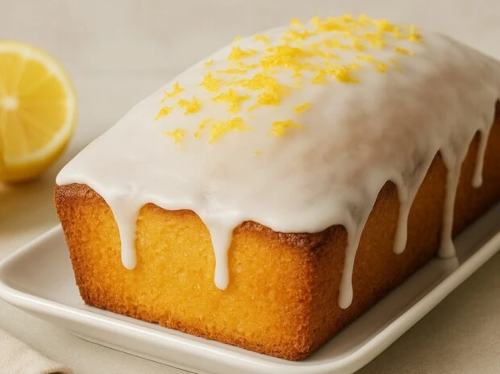
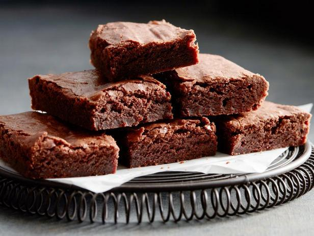
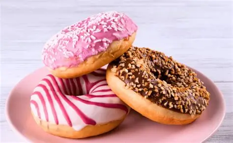
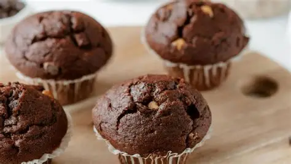
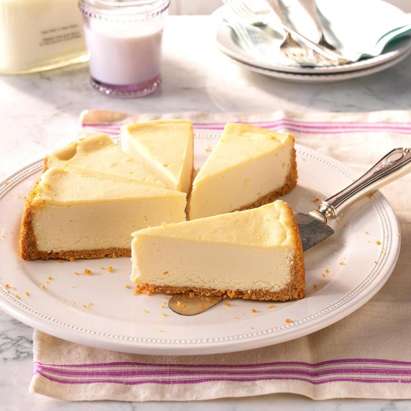
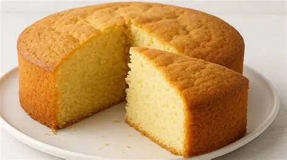

Budines ricos
Variedades de chocolate, vainilla, dulce de leche y más. Tiempo aproximado: 50 min.
Elegí una categoría y comenzá a cocinar.

Variedades de chocolate, vainilla, dulce de leche y más. Tiempo aproximado: 50 min.

Crunchy y sabrosas, ideales para compartir. Tiempo aproximado: 20 min.

Deliciosas y esponjosas, ideales para celebraciones. Tiempo aprox: 60 min.

Chocolate intenso y crujiente, perfectos para los amantes del chocolate. Tiempo aprox: 35 min.

Suaves y esponjosas, con variados esmaltes y toppings. Tiempo aproximado: 40 min.

Esponjosos y deliciosos, con frutas o chocolate. Ideales para desayuno. Tiempo aproximado: 25 min.

Cremosos y deliciosos, con base de galletas. Perfecto para ocasiones especiales. Tiempo aprox: 45 min.

Clásicos y versátiles, ideales como base para tartas. Tiempo: 30 min.